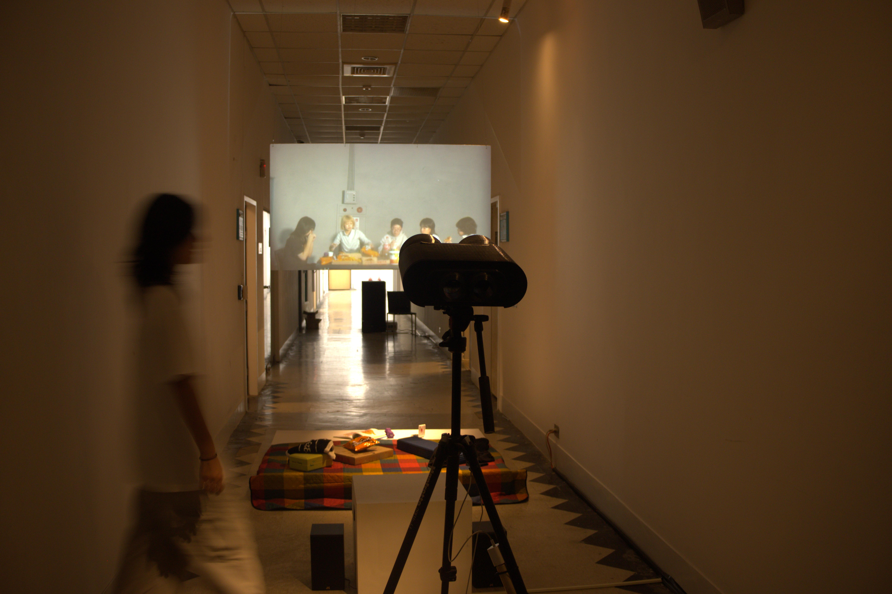
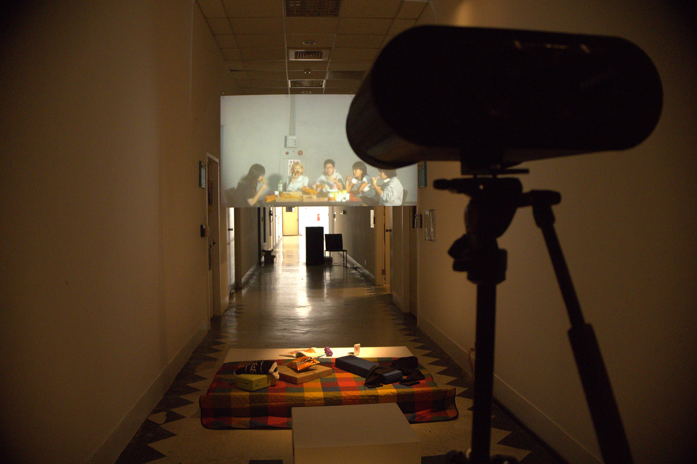
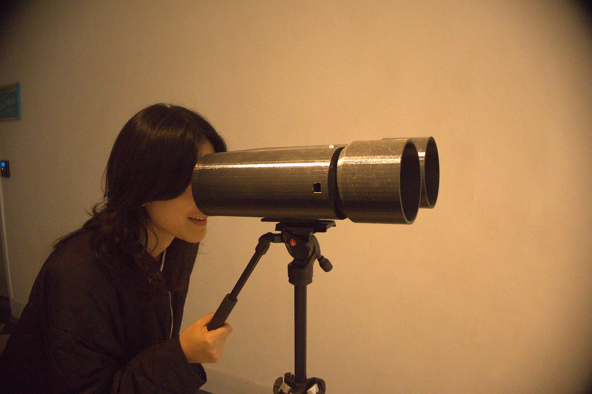
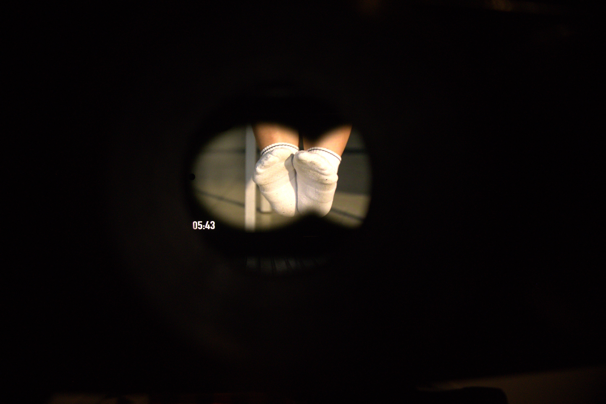

人常常會做一些像在安慰自己的行為， 像是立志要減肥，但飲料只是從全糖改成半糖， 或是設立了每天要運動，卻是去健身房打卡就出來了， 這些行為都像是在告訴自己我已經努力了。 但其實這些小小的努力對目標那件事沒有實質上的幫助， 意識到自己和身邊的人都會有這種《象徵性努力》。
微糖微冰 low suger low ice

▲ 點擊照片 觀看作品紀錄





▲ 點擊照片 觀看作品紀錄
人常常會做一些像在安慰自己的行為， 像是立志要減肥，但飲料只是從全糖改成半糖， 或是設立了每天要運動，卻是去健身房打卡就出來了， 這些行為都像是在告訴自己我已經努力了。 但其實這些小小的努力對目標那件事沒有實質上的幫助， 意識到自己和身邊的人都會有這種《象徵性努力》。


